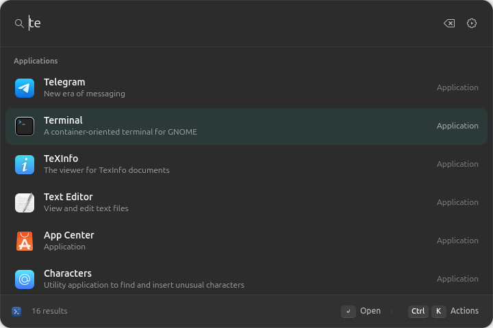

Lumen is a native command launcher for GNOME. Press Super + Space, type a few letters, and open apps and files, do quick maths, start timers, check the weather, edit images, make passwords, or run extension commands.

Apps ranked by how well they match and how often you use them.
Lumen uses GTK4 and libadwaita with a Rust core. It follows your system theme and accent colour and stays resident in the background, so it opens without a cold start.
Searches every installed app, including Flatpak and Snap. Typos and abbreviations still match, and apps you use often rank higher.
Searches names and paths through GNOME LocalSearch, so it doesn't need a second indexer. Open a file, show it in Files, or copy its path.
Type sqrt(144) * 3, 200 * 15% or 2^8 and get the answer as you type. Press Enter to copy it.
Pin what you open most with Ctrl + K. Usage counts stay on your computer.
Timers, a speed test, a port manager, weather, image tools and a password generator come built in. Write your own commands in JavaScript or TypeScript, with lists, grids, detail panes and forms drawn natively.
Your searches are never stored or sent anywhere. There's no telemetry, no cloud service and no account to sign in to.
Six extensions ship with Lumen. They start turned off; switch on the ones you want in Settings → Extensions, and their commands appear in the palette.
25m tea, 1h30m or 1:30 to start one3000 API server{word:capitalize}-{number:4}Every action has a shortcut. The footer shows what Enter will do for the selected result.
Measured on the developer's machine (GNOME 50.1, Ubuntu 26.04). Your numbers may differ.
| Super + Space | Open or close Lumen |
| ↑ ↓ Ctrl + N/P | Move the selection |
| Page Up Page Down | Jump five results |
| Enter | Open, copy or run the selected result |
| Ctrl + K | Actions: favorite, show in Files, copy path |
| Ctrl + , | Open Settings |
| Esc | Clear the search, go back, then close |
| Backspace | Leave an extension command when the search is empty |
Lumen targets GNOME 50 on Wayland. A small GNOME Shell extension provides the shortcut, focus and window placement. While Lumen is enabled, keyboard-layout switching moves to Super + Shift + Space.
If the shortcut doesn't work at first, log out and back in once so GNOME Shell loads the new extension. You don't need to reboot.
Option 1 · One command (recommended, Ubuntu 26.04, amd64)
curl -fsSL https://farvisun.github.io/gnome-launcher/install.sh | bash
Adds the signed farvisun APT repository, installs the package and turns on the shell integration. Updates then arrive with your normal system updates. Log out and back in once, then press Super + Space.
Option 2 · From source (Rust 1.92+, Node 22+)
sudo apt install build-essential pkg-config libgtk-4-dev \ libadwaita-1-dev localsearch libtinysparql-3.0-0 python3-gi git clone https://github.com/farvisun/gnome-launcher.git cd gnome-launcher cargo build --release --locked python3 scripts/install.py
Extensions are small Node.js programs. A manifest lists the commands; your code returns lists, image grids, detail pages or forms. Lists can have sections, coloured tags, progress bars, a details pane with charts, and live updates. Commands can take arguments typed beside the search, open views over each other, offer settings, and run without a window, as Raycast extensions do. Lumen draws them all with native widgets, and each extension runs in its own process.
node sdk/cli.mjs create ~/my-extension node sdk/cli.mjs build ~/my-extension ~/my-build gnome-launcher pack ~/my-build my.lumen-extension
Extensions run as your user and can access your files and network. Lumen shows you the package's declared capabilities before you install it, and never runs install scripts. Read the SDK guide →
import {serve, list, host} from '@lumen/extension-sdk'; const links = [ {id: 'gnome', title: 'GNOME', url: 'https://www.gnome.org/'}, {id: 'handbook', title: 'Developer Handbook', url: 'https://developer.gnome.org/'}, ]; const results = ({query = ''}) => list( links .filter(l => l.title.toLowerCase().includes(query.toLowerCase())) .map(({url, ...l}) => ({...l, icon: 'web-browser-symbolic', actions: [{id: 'primary', title: 'Open'}, {id: 'copy', title: 'Copy URL'}]}))); serve({links: { run: results, query: results, action: async ({item, action}) => { const link = links.find(l => l.id === item); if (action === 'copy') await host.copy(link.url); else await host.open(link.url); }, }});